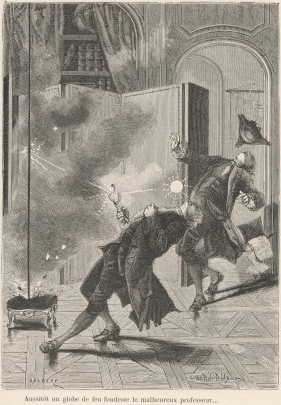

Gravure dépeignant Richmann et son assistant frappés par de la foudre en boule

Août
A Leningrad (Saint Petersbourg), lors d'un violent orage, le
physicien Georg Wilhelm Richmann est tué par une boule de feu surgie d'un
paratonnerre et qui le frappe au front. Incendie des dépôts de carburant et des ouvrages de Richmann. Son
assistant en sort presque sans blessure. Une analyse pathologique révèle qu'il n'avait qu'un petit trou sur
son front, la chassure gauche brûlée et un point bleu sur son pied. (...) le cerveau étant ok, la partie avant
du poumon saine, mais l'arrière étant brune et noire de sang. La conclusion fut que la décharge électrique
était passée dans le corps de Richmann. La communauté scientifique est choquée Frazer, Calvin: "Ball Lightning Still Natures Riddle", Modern Mechanics, novembre 1931, p. 101.